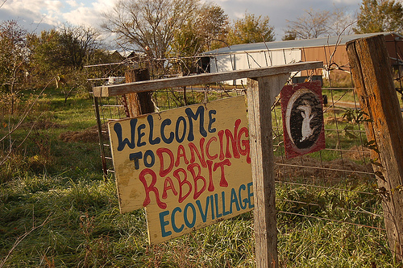
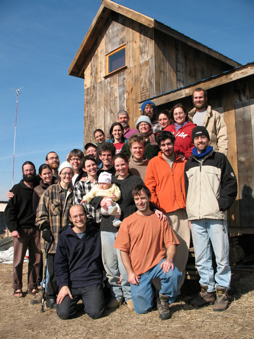
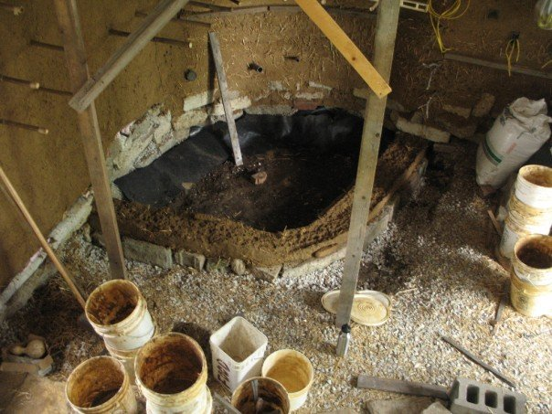

Brian Liloia used to blog alongside me at DVGuru.com. When the site was near it’s final days he mentioned going to live at an ecovillage where the community practices low-impact, sustainable living. He graciously took a few minutes to answer some questions I had.

What is Dancing Rabbit?
Dancing Rabbit Ecovillage is an intentional community located in northeastern Missouri, and it is currently composed of about 35 total members. We live in a small, off-the-grid village setting on 280 acres of land, with organic gardens and buildings made out of earthen and recycled materials. All of our power comes from renewable resources, and we catch rainwater off of our roofs for all our water needs. To put it simply, we’re a group of people devoted to the idea of living sustainably, with a minimal impact on the planet’s ecosystems.
What made you decide to become a part of Dancing Rabbit?
I originally visited Dancing Rabbit last summer, shortly after I graduated from college. During my three week visitor period, I knew pretty quickly that I wanted to come back as a full-time resident to continue to pursue my interests in living sustainably. Before I had visited Dancing Rabbit, I knew that I wanted to pursue a more self-sufficient, low-impact, and simple lifestyle, but I didn’t know how to go about it within the confines of mainstream culture. When I found out about Dancing Rabbit, I knew it was possible, and it was inspiring to see a group of people already doing what I envisioned as my goal.
Are you a permananet member? Do you live there year round? How long have you lived there?
As I write this, I am not necessarily a “permanent” member. There are no “permanent” members. Anyone can leave whenever they want, that is to say. However, I am currently a resident, and I’ve lived here for six months so far. I’ve recently put in a letter of intent for membership. A member is someone that knows that want to spend significant time here, and has the ability to build his/her own house, unlike a resident. I plan on staying on board for a while yet, maybe another year or so. We shall see.

What is an ecovillage?
An ecovillage is a community with the goal of living sustainably, with a minimal impact on the environment. This generally entails a radically different lifestyle from that of the mainstream culture. Living sustainably might be accomplished by using renewable energy, like solar and wind power, driving less (Dancing Rabbit owns two biodiesel-fueled vehicles for all of its 35 members), catching rainwater for cooking and drinking, eating locally and organically grown food, sharing resources, and generally consuming less.
Is there anything you miss about non-ecovillage living?
Not really, to be honest. I feel much more at ease with and confident about this lifestyle, and I love the culture that has taken shape here at Dancing Rabbit. It’s very open and honest and peaceful and healthy. There’s always work to be done, and good chunks of downtime, too, of course. Only once in a while do I miss things like going out to movies or moseying about New York City. (I’m originally from the suburbs around NYC.) All in all, life is good here.
What is a typical day like at dancing Rabbit?
This is an often-asked question, but still not an easy one to answer. Every day is pretty different from the next. But there are some things they all share in common. I generally wake up around 8:00 and eat breakfast. Then I usually check my email and do some writing. (I’m a freelance blogger.) After that, I might help someone out with some work they need to get done. (Right now, I’m “work exchanging” for a friend who is building his house.) At 12:00, I eat lunch with my vegan food co-op members. After that, I might continue doing work (if there’s any to be done), go for a bike ride, read a book, or do video work. (I also run a video blog here, called Dancing Rabbit TV). If I’m the cook for my food co-op that night, I might start cooking around 3:00-3:30. At 6:30, I eat dinner. Afterwards, I might play a board game with some folks, call my family or friends, read a book, watch a movie, or just hang out. Then I’ll hit the hay around 10:00-11:30, depending on how tired I am.

What do you mean by sustainable living and how is it important to the environment?
A sustainable lifestyle is one that is capable of continuing indefinitely. I, among many others, believe that the typical lifestyle lead by most Americans is highly unsustainable, and is not capable of continuing much further into the future. As a civilization, we are desperately dependent on cheap energy, particularly oil, which fuels every facet of modern living, everything from transportation to manufacturing to agriculture and everything in-between. We generally disregard how our actions have an incredibly damaging effect on the environment. Without realizing just how much damage we are causing to the planet, we will leave serious scars on the environment which may be felt by many future generations. I think it’s important that we recognize this and learn to live in harmony with the earth’s ecosystems, so life, both human and non-human, can continue on more peacefully, healthfully, and indefinitely.
What are some things people can do to be more sustainable without moving out to Dancing Rabbit?
There’s plenty that people can do to live more sustainably. The first thing to do is educate yourself and others about the environment, about our culture, and about sustainable living. As far as practical things go, you can start by consuming less and realizing that you can’t just “buy” sustainability. Try eating locally and organically grown foods, those raised without pesticides and other harmful chemicals, and those that haven’t traveled 2,000 miles to reach your dinner table. You can also try driving less. Consider walking or biking, or ridesharing and public transportation, if possible. See if you can reduce your commute by moving closer to your job. Use energy at home efficiently, and avoid buying power-hungry appliances. Use water conservatively. Recycle your trash and compost your food scraps. All of these small actions can help. The main thing is to realize just how much we consume to accomplish everyday tasks, and then try to limit what we can.
More info about the Dancing Rabbit Ecovillage can be found at http://dancingrabbit.org/ and their behind the scenes video blog, Dancing Rabbit TV. Brian has also posted a semi photo essay on Facebook showing more day to day living at Dancing Rabbit.
This post is part of Blog Action Day